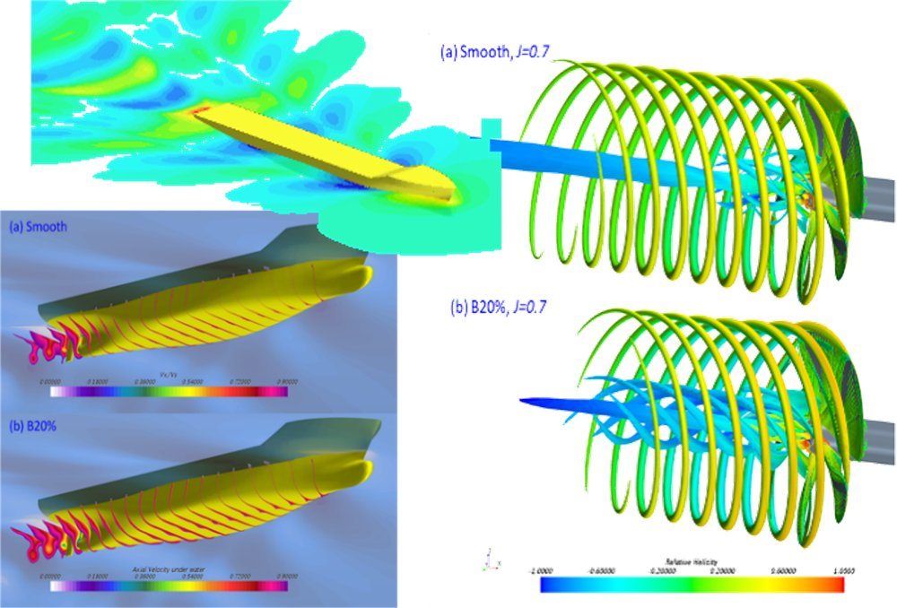
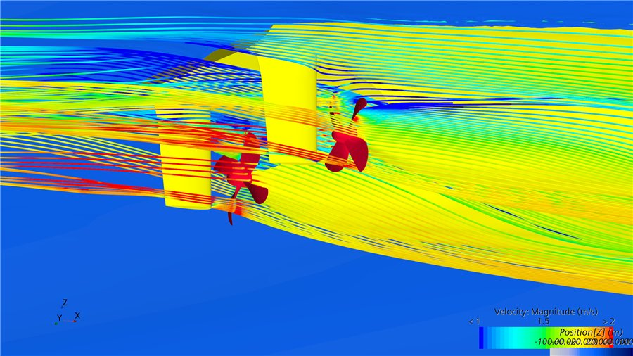
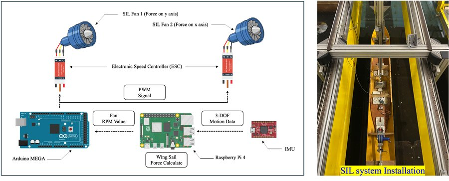
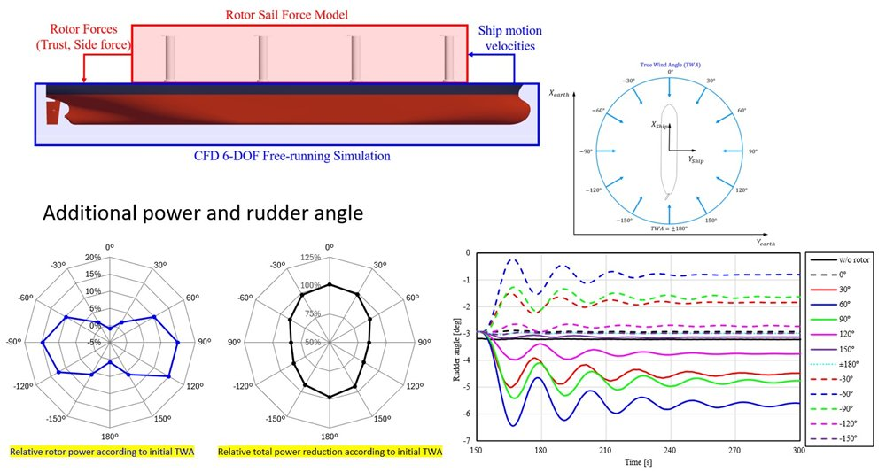
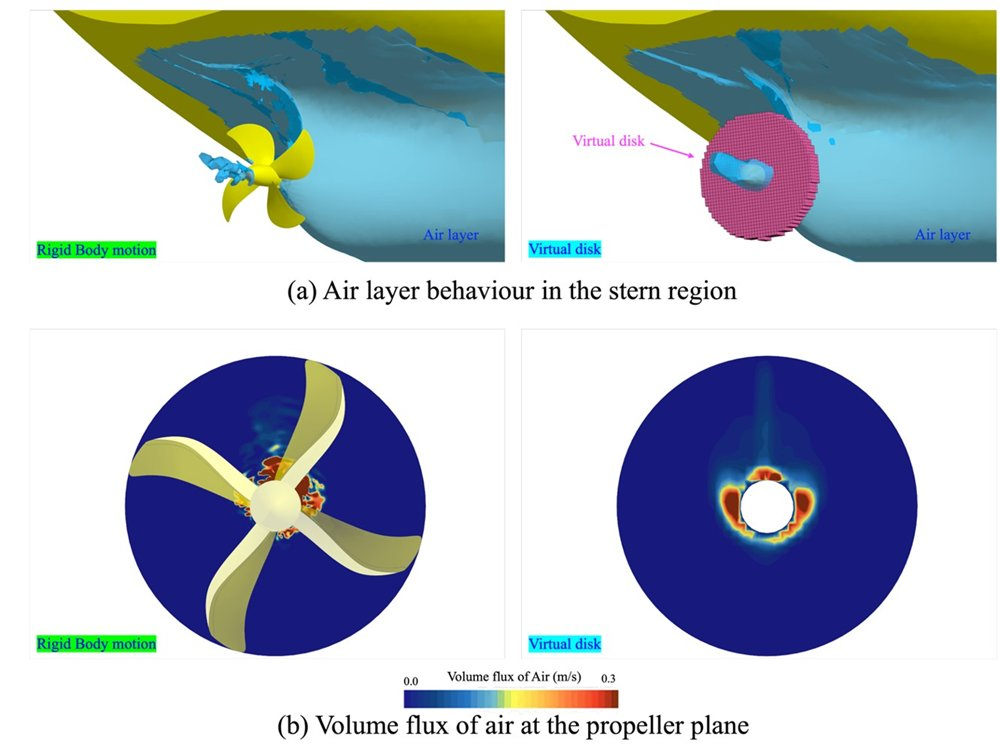
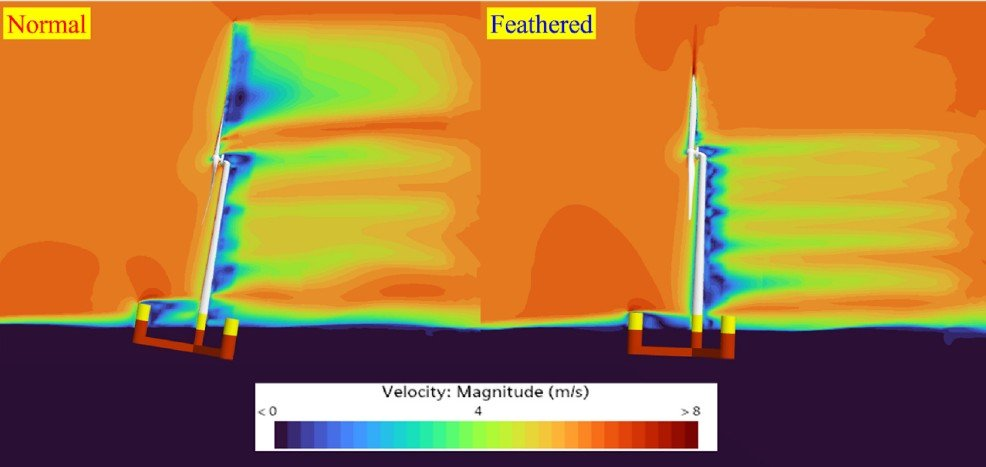
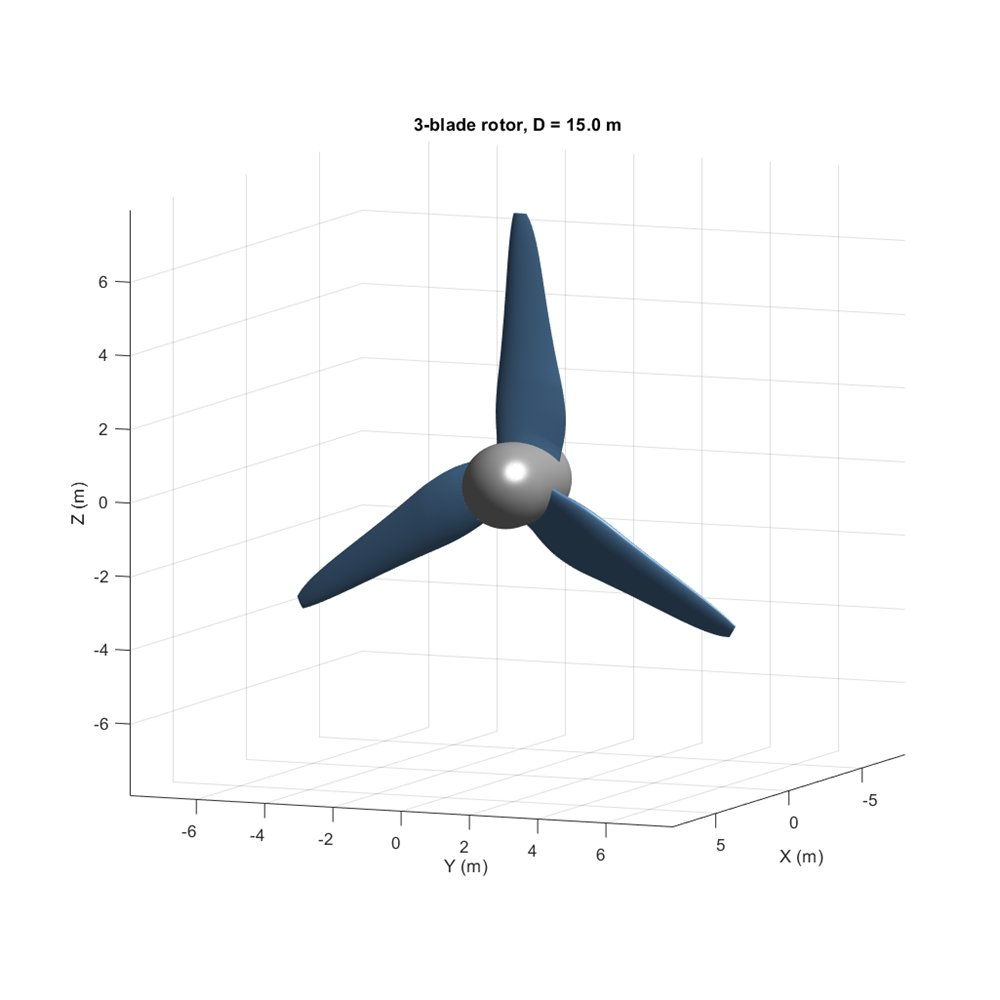
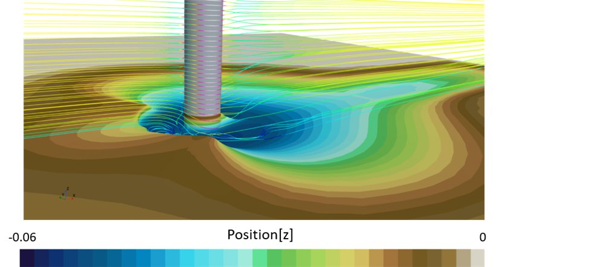

What we work on — each area supported by both physical experiment and high-fidelity computation.
The problems we work on share a common difficulty: the quantity that matters at full scale cannot be measured directly at full scale, and the quantity we can measure in a laboratory does not scale simply. Surface roughness is the clearest example, but the same tension appears in ice loads, in turbine scale effects, and in the coupled motion of floating structures. Our approach is to measure what we can, compute what we cannot, and validate against full-scale data obtained with industry partners.


A ship's hull is never smooth. Paint, welding and — above all — marine biofouling roughen the surface, and that roughness costs fuel. Predicting how much is unexpectedly difficult: unlike a hull form, surface roughness cannot be scaled between a model and a full-scale ship, so a model test alone cannot answer the question.
We attack this on three fronts. Flow-channel and towing-tank experiments determine the roughness function of a given surface. Granville's similarity-law scaling extrapolates that measurement to full scale. A modified wall-function CFD approach then carries the roughness effect into a full three-dimensional flow field, capturing not only skin friction but also the pressure field and propeller performance.
Our interest does not stop at biofouling. Working with industry, we take part in developing eco-friendly antifouling coatings — and, just as importantly, the methods by which their performance is evaluated. A coating that looks good in a laboratory panel test does not necessarily save fuel at sea, and closing that gap is an engineering problem in its own right.
A ship in a seaway moves in six degrees of freedom while its rudder and propeller respond continuously. We simulate this directly: free-running CFD in which the vessel is not constrained but steers, accelerates and rolls as it would at sea.
With this approach we have studied course-keeping in adverse weather, manoeuvring after sudden propulsion or steering failure, the influence of GM and trim variation, path-following control for maritime autonomous surface ships (MASS), push-pull manoeuvring of naval vessels, and the seakeeping of damaged ships.
Free-running simulation is expensive, and much of our work goes into making it affordable enough to use as a design tool rather than a demonstration.



IMO carbon regulation has turned energy-saving devices from an option into a practical necessity. We work on two of them.
Air lubrication systems inject air beneath the hull to reduce frictional resistance. The difficulty is numerical: the air layer is thin, unsteady, and highly sensitive to how the near-wall region is resolved. We have quantified how CFD modelling parameters change the predicted air layer, and validated those predictions against experiment.
Wind-assisted ship propulsion — wing sails and rotor sails — we study by computation and experiment. For the experimental side we use a software-in-the-loop (SIL) method: aerodynamic forces are computed in real time from the measured motion of the model and applied by fans, so a towing tank can reproduce sailing conditions it was never built for. This lets us measure resistance reduction and heel angle directly instead of inferring them from simulation alone.
As Arctic routes become navigable, ships must be designed for ice — and ice resistance is a problem that neither conventional CFD nor standard model testing handles well on its own. Ice floes are discrete bodies: they collide with one another and with the hull, break, rotate, and are pushed under.
We address this with coupled CFD–DEM analysis, in which the fluid and each individual ice floe are solved together. Through this work we take part in national projects on the Northern Sea Route, including the development of Polar Class icebreakers and eco-friendly icebreaking container ships.
In 2026 we carried out ice resistance model tests on the icebreaking research vessel Araon using synthetic ice, in collaboration with Newcastle University.

A floating wind turbine is an aerodynamic, hydrodynamic and structural problem at once, and the three cannot be separated: rotor thrust drives platform motion, platform motion changes the inflow seen by the rotor, and the mooring system constrains both.
We developed a CFD–MoorDyn coupling that solves the flow field together with mooring line dynamics. This lets us follow what happens after a line fails — when the platform drifts and the turbine must survive conditions it was not designed for.
We are now extending the method in two directions: an actuator line method that represents the rotor without resolving the blade boundary layer, and a coupling between CFD and AI surrogate models to reach the long simulation times that design load cases demand.

Tidal energy has a narrower design margin than wind: the resource is predictable, but the loads are severe and access for maintenance is limited. Getting the blade right the first time matters more.
We maintain an in-house turbine design code based on blade element momentum theory (BEMT) and use it as the starting point of a complete design cycle — blade geometry from the code, verification in a circulating water channel, and CFD for the flow detail that neither the code nor the tank can show.
With these tools we have examined how performance and structural loading change with submergence depth and wave conditions, how free-surface exposure alters the flow, the scale effects between laboratory and full-size rotors, and the penalty imposed by biofouling on the blades. We also take part in a national project on energy-self-sufficient marine bridges.

The methods we develop for ships transfer to other flows. Two current examples show how far the same CFD capability reaches.
Dissolved oxygen in aquaculture. Fish in sea cages suffer when oxygen runs low. We model oxygen transport from injected bubbles into seawater using a passive-scalar approach with two-film mass transfer, computing the saturation concentration in real time from temperature and salinity.
Scour around structures. Currents erode the seabed around bridge piers and offshore foundations. We simulate this with an erosion model coupled to mesh morphing, so the seabed shape evolves as the flow carries sediment away.
Where next?